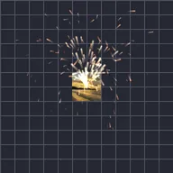

Cząsteczki
Wyrzuca z warstwy cząsteczki: śnieg, iskry, konfetti, bąbelki, kurz, serca, gwiazdy, płatki lub małe kopie samej warstwy, poruszane grawitacją, wiatrem i wirem. Zacznij od presetu, a potem zmień emiter, ilość i siły. Opcja Na uderzenia wyrzuca salwę na każde uderzenie rytmu: najpierw zaznacz muzykę, otwórz jej menu i dotknij Zaznacz uderzenia.
Ustawienia
| Ustawienie | Typ | Zakres | Domyślnie |
|---|---|---|---|
| Cząsteczka | Wybór | Śnieg, Iskry, Konfetti, Bąbelki, Kurz, Serca, Gwiazdy, Płatki, Warstwa | Śnieg |
| Emiter | Wybór | Punkt, Linia, Obszar, Kontur | Linia |
| Emisja | Wybór | Ciągła, Salwa, Na uderzenia | Ciągła |
| Tempo | Liczba | Od 0 /s do 500 /s | 40 /s |
| Liczba | Liczba | Od 0 do 1000 | 100 |
| Czas salwy | Liczba | Od 0 s do 3600 s (najwyżej długość warstwy) | 0 s |
| Powtarzaj co | Liczba | Od 0 s do 60 s | 0 s |
| Uderzenia | Wybór | Każde uderzenie, Co 2. uderzenie, Co 4. uderzenie | Każde uderzenie |
| BPM | Liczba | Od 20 do 300 | 120 |
| Czas życia | Liczba | Od 0.1 s do 30 s | 10 s |
| Prędkość | Liczba | Od 0 do 5000 | 30 |
| Kierunek | Kąt | Od -3600° do 3600° | 90° |
| Rozrzut | Kąt | Od 0° do 360° | 40° |
| Grawitacja | Liczba | Od -5000 do 5000 | 300 |
| Wiatr | Liczba | Od -5000 do 5000 | 0 |
| Wir | Liczba | Od 0 do 500 | 18 |
| Rozmiar | Liczba | Od 0% do 1000% | 100% |
| Kolor | Kolor | – | #FFFFFF |
| Kolor 2 | Kolor | – | #8FD3FF |
| Odcień | Liczba | Od 0% do 100% | 0% |
| Warstwa | Wybór | Pod cząsteczkami, Nad cząsteczkami, Ukryta | Pod cząsteczkami |
| Głębia | Włączone lub wyłączone | – | Wył. |
| Prędkość Z | Liczba | Od -5000 do 5000 | 0 |
| Rozrzut Z | Liczba | Od 0 do 5000 | 0 |
| Perspektywa | Liczba | Od 0 do 10 | 1 |
| Więcej ustawień | Włączone lub wyłączone | – | Wył. |
| Rozmiar emitera | Liczba | Od 0% do 1000% | 100% |
| Pozycja emitera | Punkt (X, Y) | Od -99999 px do 99999 px | 0 px, 0 px |
| Start z pełnią | Włączone lub wyłączone | – | Wł. |
| Zmienność czasu życia | Liczba | Od 0% do 100% | 20% |
| Zmienność prędkości | Liczba | Od 0% do 100% | 50% |
| Opór powietrza | Liczba | Od 0 do 20 | 1.2 |
| Prędkość wiru | Liczba | Od 0 do 10 | 0.25 |
| Zmienność rozmiaru | Liczba | Od 0% do 100% | 60% |
| Rozmiar końcowy | Liczba | Od 0% do 1000% | 100% |
| Orientacja | Wybór | Swobodna, Zgodna z ruchem | Swobodna |
| Losowy obrót | Liczba | Od 0% do 100% | 100% |
| Wirowanie | Liczba | Od -3600 °/s do 3600 °/s | 0 °/s |
| Zmienność wirowania | Liczba | Od 0% do 100% | 50% |
| Pojawianie się | Liczba | Od 0% do 100% | 5% |
| Znikanie | Liczba | Od 0% do 100% | 15% |
| Migotanie | Liczba | Od 0% do 100% | 0% |
| Tryb koloru | Wybór | Jeden kolor, Losowa mieszanka, W czasie życia | Jeden kolor |
| Zmienność koloru | Liczba | Od 0% do 100% | 0% |
| Mieszanie | Wybór | Normalne, Dodawanie, Ekran | Normalne |
| Ziarno | Liczba | Od 0 do 9999 | 0 |
Presety
Wybierz go na stronie szczegółów efektu w Bibliotece efektów. Każdy z nich to gotowe ustawienie, które możesz dalej edytować.
- Śnieg

Iskry- Konfetti
- Bąbelki
- Kurz
- Serca
- Migotanie
- Płatki
- Fontanna warstw
- Konfetti w rytmie